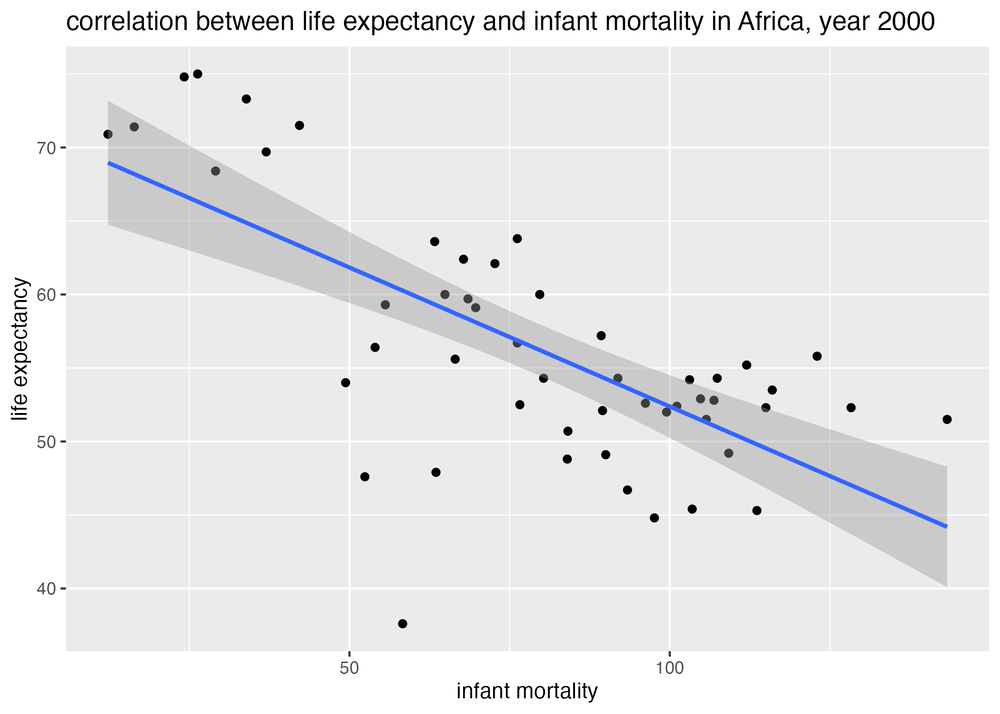

Warning: package 'flextable' was built under R version 4.3.1
Attaching package: 'flextable'
The following objects are masked from 'package:gtsummary':
as_flextable, continuous_summary
The following object is masked from 'package:purrr':
compose
Loading and checking the data
Below, we familiarize ourselves with the most recent dataset from the package gapminder.
# pull information on the gapminder packagehelp(gapminder) #open help file for gapminder dataset# structure of the gapminder dataset?str(gapminder) # what is the class of the gapminder dataset? how many variables? class of each variable?
'data.frame': 10545 obs. of 9 variables:
$ country : Factor w/ 185 levels "Albania","Algeria",..: 1 2 3 4 5 6 7 8 9 10 ...
$ year : int 1960 1960 1960 1960 1960 1960 1960 1960 1960 1960 ...
$ infant_mortality: num 115.4 148.2 208 NA 59.9 ...
$ life_expectancy : num 62.9 47.5 36 63 65.4 ...
$ fertility : num 6.19 7.65 7.32 4.43 3.11 4.55 4.82 3.45 2.7 5.57 ...
$ population : num 1636054 11124892 5270844 54681 20619075 ...
$ gdp : num NA 1.38e+10 NA NA 1.08e+11 ...
$ continent : Factor w/ 5 levels "Africa","Americas",..: 4 1 1 2 2 3 2 5 4 3 ...
$ region : Factor w/ 22 levels "Australia and New Zealand",..: 19 11 10 2 15 21 2 1 22 21 ...
# summarize the gapminder datasummary(gapminder) #gives summary statistics for each numeric variable and count information for each categorical variable
country year infant_mortality life_expectancy
Albania : 57 Min. :1960 Min. : 1.50 Min. :13.20
Algeria : 57 1st Qu.:1974 1st Qu.: 16.00 1st Qu.:57.50
Angola : 57 Median :1988 Median : 41.50 Median :67.54
Antigua and Barbuda: 57 Mean :1988 Mean : 55.31 Mean :64.81
Argentina : 57 3rd Qu.:2002 3rd Qu.: 85.10 3rd Qu.:73.00
Armenia : 57 Max. :2016 Max. :276.90 Max. :83.90
(Other) :10203 NA's :1453
fertility population gdp continent
Min. :0.840 Min. :3.124e+04 Min. :4.040e+07 Africa :2907
1st Qu.:2.200 1st Qu.:1.333e+06 1st Qu.:1.846e+09 Americas:2052
Median :3.750 Median :5.009e+06 Median :7.794e+09 Asia :2679
Mean :4.084 Mean :2.701e+07 Mean :1.480e+11 Europe :2223
3rd Qu.:6.000 3rd Qu.:1.523e+07 3rd Qu.:5.540e+10 Oceania : 684
Max. :9.220 Max. :1.376e+09 Max. :1.174e+13
NA's :187 NA's :185 NA's :2972
region
Western Asia :1026
Eastern Africa : 912
Western Africa : 912
Caribbean : 741
South America : 684
Southern Europe: 684
(Other) :5586
# although the str() function gives the dataset class, we can check with the function class()class(gapminder) #gives the class of the r object gapminder
[1] "data.frame"
The gapminder dataset is an object of class “data.frame”. Each row of the dataframe contains health and income outcomes for some year for some country. The dataframe contains 9 columns, for country name, region, and continent; the year of the observation; and 5 different demographic, health, and income outcomes for each observation. These outcomes consist of infant_mortality, life_expectancy, fertility, population, and gdp.
There are 10545 observations in total, gathered from 184 countries between the years of 1960 and 2016.
Processing the data
Here, we are going to select and process data on african countries from the gapminder dataset.m
# subset rows from dataset containing factor level 'Africa' from column "continent"africadata = gapminder %>%filter(continent =="Africa") #dplyr's filter() function accomplishes this# create life expectancy subsets of africadata containing 1) infant mortality and life expectancy and 2) population and life expectancy africa.IMvsLE = africadata %>%select("infant_mortality", "life_expectancy") #dplyrs select() function subsets columnsafrica.PvsLE = africadata %>%select("population", "life_expectancy") # structure of the life expectancy subsetsstr(africa.IMvsLE) #2907 observations, 2 columns (variables)
'data.frame': 2907 obs. of 2 variables:
$ infant_mortality: num 148 208 187 116 161 ...
$ life_expectancy : num 47.5 36 38.3 50.3 35.2 ...
'data.frame': 2907 obs. of 2 variables:
$ population : num 11124892 5270844 2431620 524029 4829291 ...
$ life_expectancy: num 47.5 36 38.3 50.3 35.2 ...
# summary of variables in life expectancy subsetssummary(africa.IMvsLE) #summary stats of both columns containing numerical values
infant_mortality life_expectancy
Min. : 11.40 Min. :13.20
1st Qu.: 62.20 1st Qu.:48.23
Median : 93.40 Median :53.98
Mean : 95.12 Mean :54.38
3rd Qu.:124.70 3rd Qu.:60.10
Max. :237.40 Max. :77.60
NA's :226
summary(africa.PvsLE) #summary stats of both columns contain numerical values
population life_expectancy
Min. : 41538 Min. :13.20
1st Qu.: 1605232 1st Qu.:48.23
Median : 5570982 Median :53.98
Mean : 12235961 Mean :54.38
3rd Qu.: 13888152 3rd Qu.:60.10
Max. :182201962 Max. :77.60
NA's :51
The code chunk above isolates the 2907 observations from african countries only within the gapminder dataset and stores this subset in the “data.frame” object, africandata. Two subsets of the africandata data frame are generated. The first, africa.IMvsLE, contains two columns showing the values of variables infant_mortality and life_expectancy for each observation. The second, africa.PvsLE, contains two columns showing the values of variables population and life_expectancy for each observation.
Plotting
The following code chunk generates two plots, visualizing the association of either infant_mortality or population with life_expectancy across Africa between 1960-2016.
#life_expectancy vs infant_mortality plot1 =ggplot() +geom_point(data = africa.IMvsLE, aes(x = infant_mortality, y = life_expectancy)) +labs(x ="infant mortality", y ="life expectancy", title ="correlation between life expectancy and infant mortality in Africa, 1960 - 2016")plot2 =ggplot() +geom_point(data = africa.PvsLE, aes(x = population, y = life_expectancy)) +scale_x_continuous(trans ="log") +labs(x ="population", y ="life expectancy", title ="correlation between life expectancy and population size, 1960-2016")figure_file =here("coding-exercise","results", "figures","life_exp_inf_mort_all.png")ggsave(filename = figure_file, plot=plot1)
Figure 1: life expectancy by infant mortality, Africa, 1960-2016.
Figure 2: life expectancy by population size, Africa, 1960-2016.
Obviously, there appear to be clusters of data associated with the variables infant_mortality and population. These clusters may be the result of fixed effects from another associated variable, such as year.
The code chunk below regenerates these figures, with points colored by the year during which the observations were reported. Notice that I am now using the africadata subset to generate these figures, as this dataset also contains the year variable.
## life_expectancy vs infant_mortality stratified by yearplot3 =ggplot() +geom_point(data = africadata, aes(x = infant_mortality, y = life_expectancy, col =as.factor(year))) +labs(x ="infant mortality", y ="life expectancy", title ="correlation between life expectancy and infant mortality in Africa, 1960 - 2016")plot4 =ggplot() +geom_point(data = africadata, aes(x = population, y = life_expectancy, col =as.factor(year))) +scale_x_continuous(trans ="log") +labs(x ="population", y ="life expectancy", title ="correlation between life expectancy and population size, 1960-2016")figure_file =here("coding-exercise","results", "figures","life_exp_inf_mort_byyears.png")ggsave(filename = figure_file, plot=plot3)
Figure 3: life expectancy by infant mortality, Africa, by year.
Figure 4: life expectancy by population size, Africa, by year.
Here, we see that “lines” in our data demonstrate how population size and infant mortality each correlate with year. However, this is visually difficult to disentangle. What we can see, particularly from our second plot, is that life expectancy appears somewhat constant across a range of population sizes within the same year.
Let’s recreate these plots, but only choose observations from a single year.
More processing
The infant_mortality variable within africandata contains many NAs. The code below determines which years contain missing (NA) data for infant mortality.
## determine which years contain missing infant mortality datamissing_IM_years =levels(factor(africadata[is.na(africadata$infant_mortality), "year"])) # which levels of factor "year" contain missing data for vairable "infant mortality"?print(paste("Infant mortality data is missing from the years", paste(missing_IM_years, collapse =" "))) #print these years
[1] "Infant mortality data is missing from the years 1960 1961 1962 1963 1964 1965 1966 1967 1968 1969 1970 1971 1972 1973 1974 1975 1976 1977 1978 1979 1980 1981 2016"
Infant mortality data is missing from observations between 1960-1981, and again from 2016. Between 1981 and 2016, then, every observation from each year contains infant mortality data. So, we will plot life_expectancy against infant_mortality from observations taken during a year within that time frame, say, the year 2000.
More plotting
The variable population is not missing data from the year 2000, so we can also plot life expectancy against population for observations taken in 2000, as well.
## extract observations from the year 2000 only and save in a new dataframeafricadata_2000 = africadata %>%filter(year ==2000)## check str(africadata_2000) #all variables from africadata included
'data.frame': 51 obs. of 9 variables:
$ country : Factor w/ 185 levels "Albania","Algeria",..: 2 3 18 22 26 27 29 31 32 33 ...
$ year : int 2000 2000 2000 2000 2000 2000 2000 2000 2000 2000 ...
$ infant_mortality: num 33.9 128.3 89.3 52.4 96.2 ...
$ life_expectancy : num 73.3 52.3 57.2 47.6 52.6 46.7 54.3 68.4 45.3 51.5 ...
$ fertility : num 2.51 6.84 5.98 3.41 6.59 7.06 5.62 3.7 5.45 7.35 ...
$ population : num 31183658 15058638 6949366 1736579 11607944 ...
$ gdp : num 5.48e+10 9.13e+09 2.25e+09 5.63e+09 2.61e+09 ...
$ continent : Factor w/ 5 levels "Africa","Americas",..: 1 1 1 1 1 1 1 1 1 1 ...
$ region : Factor w/ 22 levels "Australia and New Zealand",..: 11 10 20 17 20 5 10 20 10 10 ...
summary(africadata_2000) #and each variable is of the same class as corresponding africadata variables
country year infant_mortality life_expectancy
Algeria : 1 Min. :2000 Min. : 12.30 Min. :37.60
Angola : 1 1st Qu.:2000 1st Qu.: 60.80 1st Qu.:51.75
Benin : 1 Median :2000 Median : 80.30 Median :54.30
Botswana : 1 Mean :2000 Mean : 78.93 Mean :56.36
Burkina Faso: 1 3rd Qu.:2000 3rd Qu.:103.30 3rd Qu.:60.00
Burundi : 1 Max. :2000 Max. :143.30 Max. :75.00
(Other) :45
fertility population gdp continent
Min. :1.990 Min. : 81154 Min. :2.019e+08 Africa :51
1st Qu.:4.150 1st Qu.: 2304687 1st Qu.:1.274e+09 Americas: 0
Median :5.550 Median : 8799165 Median :3.238e+09 Asia : 0
Mean :5.156 Mean : 15659800 Mean :1.155e+10 Europe : 0
3rd Qu.:5.960 3rd Qu.: 17391242 3rd Qu.:8.654e+09 Oceania : 0
Max. :7.730 Max. :122876723 Max. :1.329e+11
region
Eastern Africa :16
Western Africa :16
Middle Africa : 8
Northern Africa : 6
Southern Africa : 5
Australia and New Zealand: 0
(Other) : 0
## plot## life_expectancy vs infant_mortality in the year 2000plot5 =ggplot() +geom_point(data = africadata_2000, aes(x = infant_mortality, y = life_expectancy)) +geom_smooth(data = africadata_2000, aes(x = infant_mortality, y = life_expectancy), method ='lm') +labs(x ="infant mortality", y ="life expectancy", title ="correlation between life expectancy and infant mortality in Africa, year 2000")plot6 =ggplot() +geom_point(data = africadata_2000, aes(x = population, y = life_expectancy)) +scale_x_continuous(trans ="log") +geom_smooth(data = africadata_2000, aes(x = population, y = life_expectancy), method ='lm') +labs(x ="population", y ="life expectancy", title ="correlation between life expectancy and population size, year 2000")figure_file =here("coding-exercise","results", "figures","life_exp_inf_mort_2000.png")ggsave(filename = figure_file, plot=plot5)
Saving 7 x 5 in image
`geom_smooth()` using formula = 'y ~ x'
Saving 7 x 5 in image
`geom_smooth()` using formula = 'y ~ x'

Figure 5: life expectancy by infant mortality, Africa 2000.
Figure 6: life expectancy by population size, Africa 2000.
Are these correlations (linear regressions) significant?
Simple model fits
The following code chunk utilizes the lm() function in R to determine the best-fit, simple linear regression model with life_expectancy in the year 2000 as the outcome variable and either infant_mortality or population as the predictor.
# linear regression, fixed effect, life expectancy ~ infant_mortalityfit1 =lm(data = africadata_2000, life_expectancy ~ infant_mortality) #results saved in lm object `fit1`# linear regression, fixed effect, life expectancy ~ infant_mortalityfit2 =lm(data = africadata_2000, life_expectancy ~ population) #results saved in lm object `fit2`# print summary of lm objects fit1 and fit2summary(fit1)
Call:
lm(formula = life_expectancy ~ infant_mortality, data = africadata_2000)
Residuals:
Min 1Q Median 3Q Max
-22.6651 -3.7087 0.9914 4.0408 8.6817
Coefficients:
Estimate Std. Error t value Pr(>|t|)
(Intercept) 71.29331 2.42611 29.386 < 2e-16 ***
infant_mortality -0.18916 0.02869 -6.594 2.83e-08 ***
---
Signif. codes: 0 '***' 0.001 '**' 0.01 '*' 0.05 '.' 0.1 ' ' 1
Residual standard error: 6.221 on 49 degrees of freedom
Multiple R-squared: 0.4701, Adjusted R-squared: 0.4593
F-statistic: 43.48 on 1 and 49 DF, p-value: 2.826e-08
summary(fit2)
Call:
lm(formula = life_expectancy ~ population, data = africadata_2000)
Residuals:
Min 1Q Median 3Q Max
-18.429 -4.602 -2.568 3.800 18.802
Coefficients:
Estimate Std. Error t value Pr(>|t|)
(Intercept) 5.593e+01 1.468e+00 38.097 <2e-16 ***
population 2.756e-08 5.459e-08 0.505 0.616
---
Signif. codes: 0 '***' 0.001 '**' 0.01 '*' 0.05 '.' 0.1 ' ' 1
Residual standard error: 8.524 on 49 degrees of freedom
Multiple R-squared: 0.005176, Adjusted R-squared: -0.01513
F-statistic: 0.2549 on 1 and 49 DF, p-value: 0.6159
table1 = fit1 %>%tbl_regression() #save summaries as tables using tbl_regression() function from flextable packagetable2 = fit2 %>%tbl_regression() #save summaries as tables using tbl_regression() function from flextable package# save summary tablessummarytable_file =here("coding-exercise","results", "tables-files", "lm_life_exp_inf_mort.rds")saveRDS(table1, file = summarytable_file)summarytable_file =here("coding-exercise","results", "tables-files", "lm_life_exp_pop.rds")saveRDS(table2, file = summarytable_file)# extract p-values from summaries to display on figuresp.infant_mortality =unname(summary(fit1)$coefficients[,"Pr(>|t|)"])[2]p.population =unname(summary(fit2)$coefficients[,"Pr(>|t|)"])[2]
Table 1: Linear regression model of life expectancy by infant mortality.
Characteristic
Beta
95% CI
p-value
infant_mortality
-0.19
-0.25, -0.13
<0.001
Table 2: Linear regression model of life expectancy by population size.
Characteristic
Beta
95% CI
p-value
population
0.00
0.00, 0.00
0.6
## replot with pvals ## life_expectancy vs infant_mortality in the year 2000plot7 =ggplot() +geom_point(data = africadata_2000, aes(x = infant_mortality, y = life_expectancy)) +geom_smooth(data = africadata_2000, aes(x = infant_mortality, y = life_expectancy), method ='lm') +annotate(geom ="text", x =125, y =70, label =paste("p-value =", signif(p.infant_mortality, digits =3)), color ="forestgreen") +labs(x ="infant mortality", y ="life expectancy", title ="correlation between life expectancy and infant mortality in Africa, year 2000")plot8 =ggplot() +geom_point(data = africadata_2000, aes(x = population, y = life_expectancy)) +scale_x_continuous(trans ="log") +geom_smooth(data = africadata_2000, aes(x = population, y = life_expectancy), method ='lm') +annotate(geom ="text", x =163000, y =40, label =paste("p-value =", signif(p.population, digits =3)), color ="maroon") +labs(x ="population", y ="life expectancy", title ="correlation between life expectancy and population size, year 2000")figure_file =here("coding-exercise","results", "figures","life_exp_inf_mort_reg.png")ggsave(filename = figure_file, plot=plot7)
Saving 7 x 5 in image
`geom_smooth()` using formula = 'y ~ x'
Saving 7 x 5 in image
`geom_smooth()` using formula = 'y ~ x'
Figure 7: linear regression of life expectancy by infant mortality, Africa 2000.
Figure 8: linear regression of life expectancy by population size, Africa 2000.
Life expectancy appears to decrease with infant mortality, while decreasing only slightly with population size (Figure 7, Figure 8). Using a definition of \(pvalue < 0.05\) as significance, it is evident that population size is a poor predictor of life expectancy (\(p = 0.6 > 0.05\)). However, infant mortality is in fact a better, significant predictor of life expectancy (\(p = 2 \times 10^{-8}\)) (Table 1, Table 2). Thus, we fail to reject the null hypothesis that life expectancy is not correlated with population size, but do reject the null hypothesis that life expectancy is not correlated with infant mortality rates.